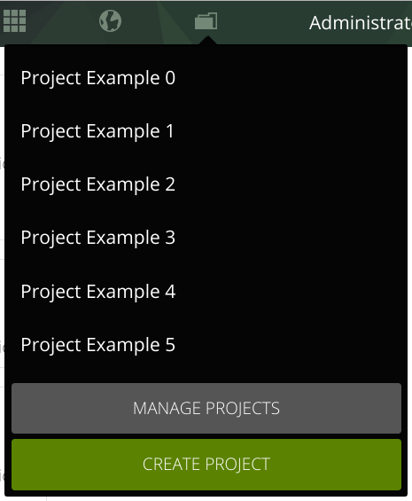
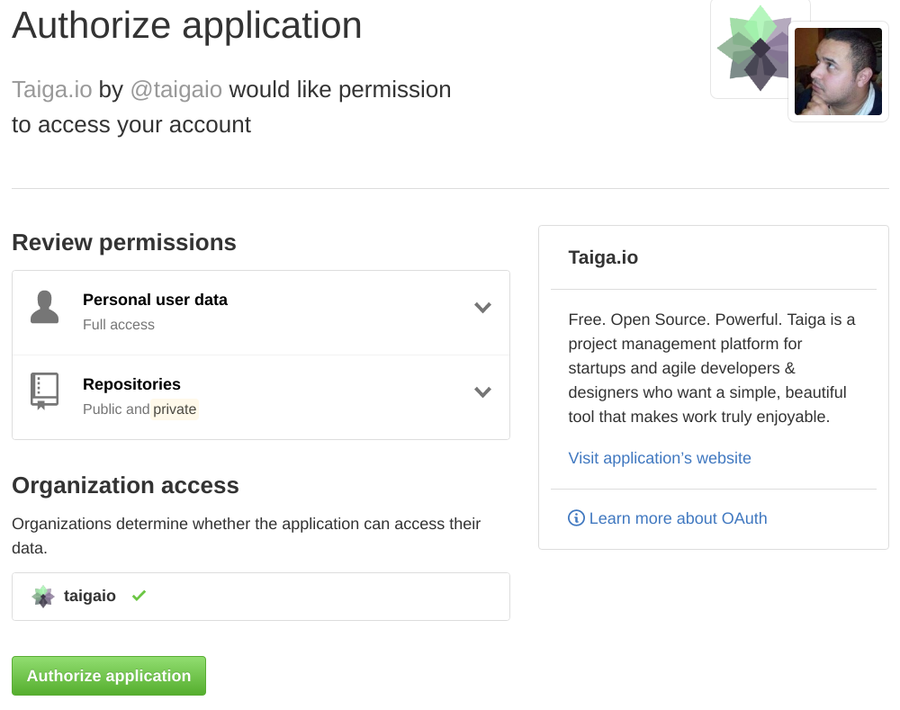

Github importer
How I import a project from Github?
To start the importation project, you have to got to your project menu, and click on "Create Project" button.

After that, you can select how to create the project, in this case we want to "Import project".

You can select which importer do you want to use, in this case, you have to select the "GitHub" importer.

As soon as you select the github importer, you will be redirected to the GitHub authorization page, to allow Taiga to access to your repositories (during the next day). You have to click "Allow", to continue the process.

Then you have to select which github repository want to import.

Once you have selected the repository you have to define how you want to import the project. This include:
- The title of the project.
- The description of the project.
- How do you want to import the issues in Github.
- If the project is public or private
If you want to keep a link from your taiga User Stories to the original github issues.

Before finish the import process you have to match your GitHub users with your Taiga users, this allow us to keep assignation, creation and comments author information correctly.

Finally, you only have to click "Import" button to start the import process, this can take a while, so be patient.

After the import process, you can access to your new created project that will looks like this.

Wich data is imported, and how?
- Github Project as Taiga Project (Kanba, Scrum or Issues project).
- Organization avatar as project avatar.
- Github Issues as Taiga User Stories or Issues.
- Collaborators as project members.
- Tags and tags colors.
- Comments.
- Changes in state, milestone, assignation and tags.
- Milestones as sprints.
- Issues assignations as User Story/Issue assignation for the first, and User Story/Issue watchers for the rest.